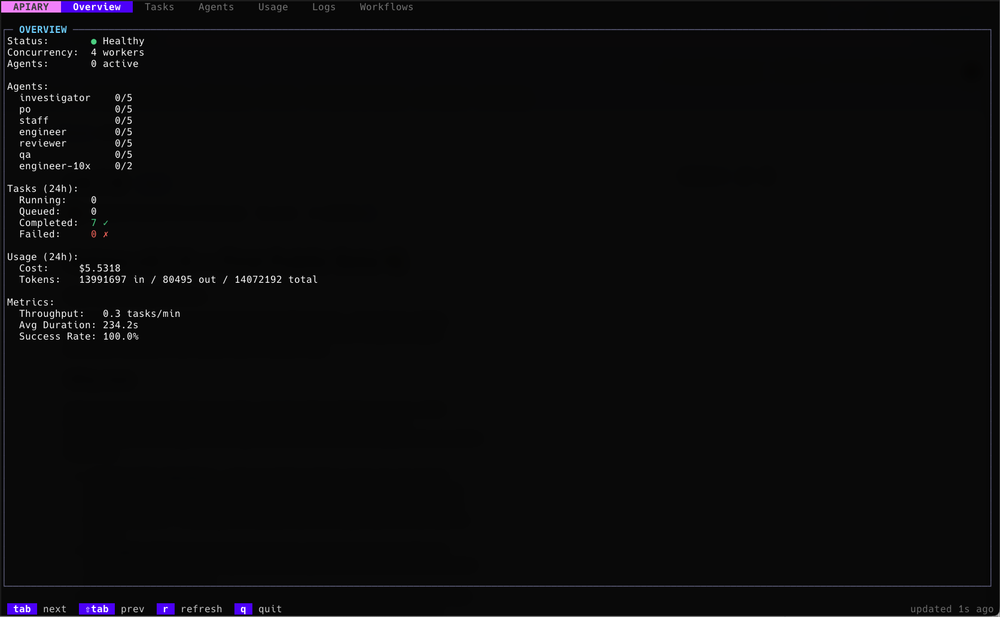
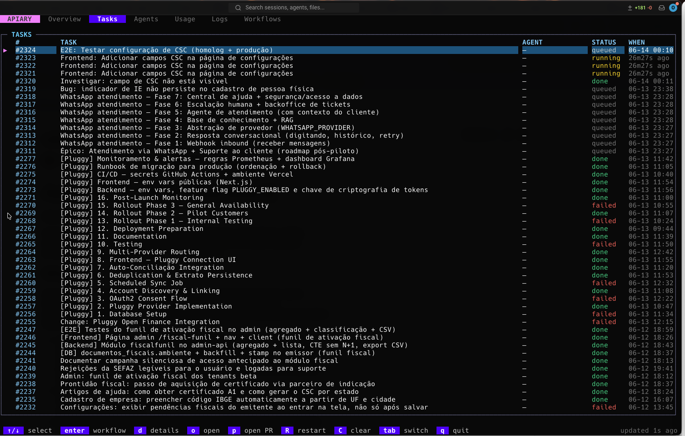
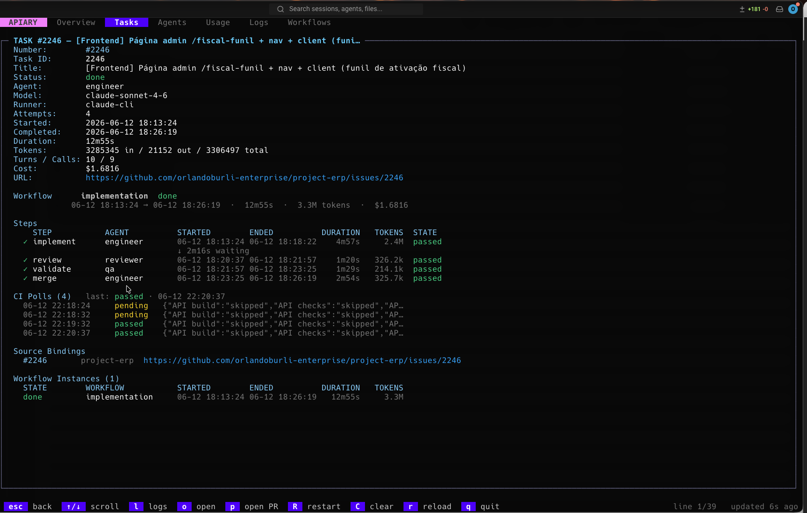
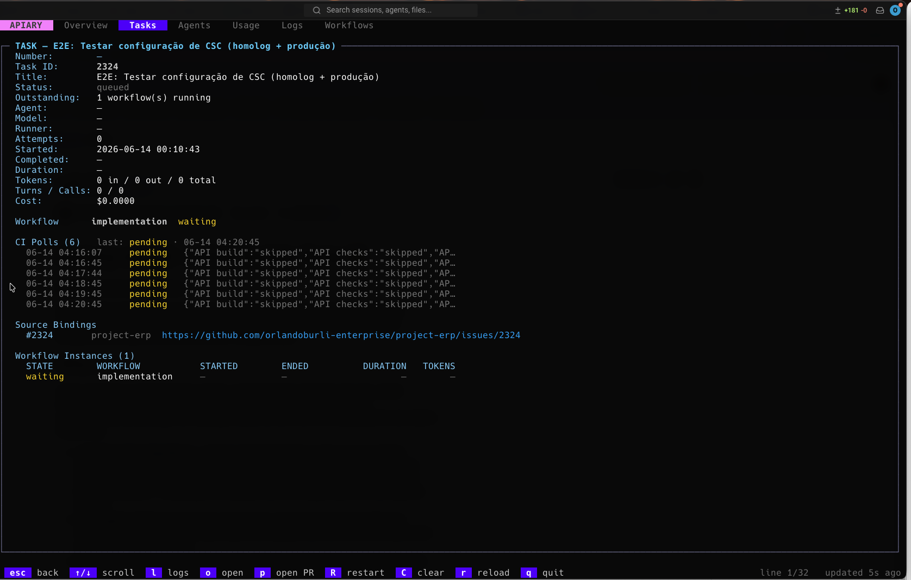
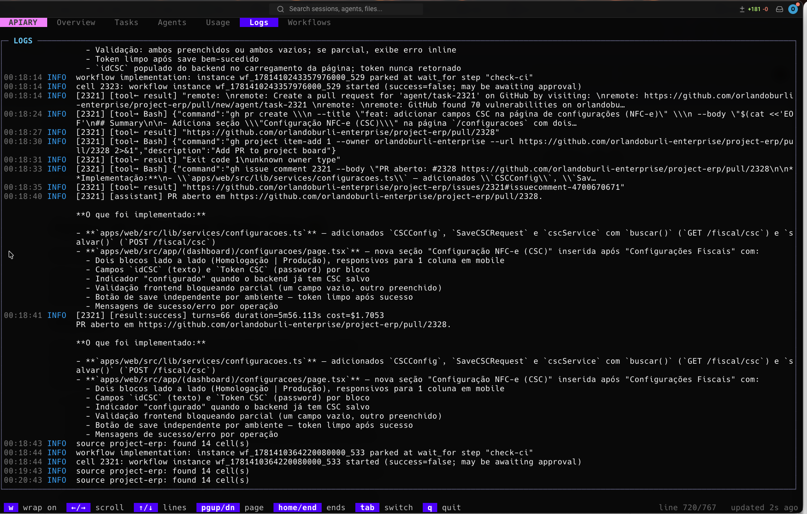

The open-source harness that eliminates the human dispatcher bottleneck. Route tasks from your issue tracker to the right AI agent, and let it run unattended.
The last two years gave us incredible AI agents. Claude, OpenCode, Cursor — point one at a task and it writes code, runs tests, opens a PR. The technology is genuinely impressive.
But look closely at how teams actually deploy them, and there's a human trapped in the middle of every single run.
Someone reads the backlog. Someone decides this task is a good fit. Someone picks the model, pastes the context, kicks off a run, watches it go, and babysits the result. The agent is fully autonomous. The dispatching is entirely manual.
That human-in-the-middle isn't a bottleneck — it's the bottleneck. It doesn't scale. It doesn't run at 2am. It quietly caps how many tasks your agents can actually touch.
Apiary closes that loop. And it does it the way a developer would: no SaaS, no vendor lock-in, no black boxes. Just a tool you control.
Apiary is a small, self-hosted Go binary. You write one apiary.yaml file. It says:
backend-bug, route it to the debugging-expert agent on Claude. If it's labeled refactor, send it to the architect on OpenCode with a fallback to Cursor."Then you run apiary daemon and walk away. Tasks flow in from your issue tracker, get routed to the right agent and model with rules you define in YAML, and results flow back out automatically.
No SaaS. No database to stand up. No credentials passed around. State lives in one SQLite file next to your config. You own your data. You own your costs. You see exactly what everything costs, down to the cent.
That's the difference between a tool for developers and a tool built by someone who understands what developers actually want.
The dashboard shows real-time metrics: task throughput, success rate, active agents, and queue depth. Everything you need to know about your unattended dispatch at a glance.

If you've looked at other agent dispatch tools, you've probably seen Hermes or similar solutions. They work well, but they all have the same constraint: they only work with APIs.
That sounds fine until you do the math. Claude API pricing is 3-5x more expensive than CLI pricing. If you already have a Claude Pro subscription ($20/month), you're leaving money on the table by routing through expensive APIs instead of using what you've already paid for.
Apiary was built to solve exactly this problem:
This is why developers building with AI agents often choose to build their own dispatch system: existing tools force you into expensive API tiers or lock you into cloud platforms. Apiary removes that constraint.
Sources (GitHub, Plane, Jira)
↓ (polling)
Router (workflow triggers)
↓ (matching)
Workflow Engine (DAG executor)
↓ (dispatch)
Runners (claude, opencode, cursor, API)
↓ (execution)
Results written back (comments, labels, state)
The daemon does all the work. The dashboard (apiary dashboard) and CLI commands (apiary status, apiary instances, apiary task) are read-only windows into the same SQLite database.
No magic. No hidden state. Everything Apiary knows is in your config or that one database file. You can inspect, debug, and understand every decision.
Work doesn't live in one place. Your frontend team uses GitHub, your backend team uses Jira, your design feedback is in Plane. Apiary sources can ingest tasks from all of them and route them through the same workflows.
Polls your repositories, reads issue labels, states, and comments. When a workflow completes, Apiary posts results back as comments and can update labels and close the issue.
sources:
- id: main-repo
type: github
config:
repo: my-org/my-repo
api_key: ${GITHUB_TOKEN}
poll_interval: 120s
filters:
states: [open]
labels: [ai-ready] # only process tasks manually marked for agents
Full Plane integration with custom fields, status transitions, and real-time updates. Agents can update issue state as they progress.
sources:
- id: project-backlog
type: plane
config:
workspace: my-workspace
project: project-id
api_key: ${PLANE_API_KEY}
filters:
states: [backlog, todo, in_progress]
JQL-based search, status automation, and blocking relationships. Apiary reads Jira's Blocks link type to understand dependencies.
sources:
- id: jira
type: jira
config:
base_url: https://company.atlassian.net
email: bot@company.com
api_token: ${JIRA_API_TOKEN}
filters:
jql: 'labels = apiary AND statusCategory != Done'
Note: Each source can have its own filter rules. Tasks from different sources flow through the same routing logic and can fan out to any workflow. One daemon, many task systems.
A workflow is a pipeline of steps, fired when its trigger matches a task. Start simple — one step per agent — and scale to complex multi-stage coordination. YAML all the way. No UI to click through, no drag-and-drop workflow builder. Just code.
workflows:
- id: implement
trigger:
priority: 10
match:
source: github-repo
labels: [feature]
steps:
- id: design-api
agent: architect
- id: implement-backend
agent: engineer
kind: dependency # ← NEW: wait for upstream
wait_for_task: design-api
- id: write-tests
agent: qa
kind: dependency
wait_for_task: implement-backend
- id: review
type: approval # human gate
on_reject:
restart_from: implement-backend
max: 3
on_complete:
set_state: closed
set_labels: [done, verified]
type: agent — Dispatch to an agent. The agent runs the prompt, and everything it outputs is captured (logs, tokens, cost).type: wait_for — Park the workflow until a condition is met:
kind: ci — wait for GitHub checks to pass (active polling, survives daemon restarts)kind: dependency — wait for an upstream task to complete (blocks dependent stages)type: approval — Park until a human reviews and approves or rejects. Includes timeout and notification hooks.type: split — Branch logic: evaluate a condition and pick a path.type: foreach — Iterate over an array of inputs (e.g., spawn multiple child tasks in parallel).Every step's logs, tokens, and cost are recorded. The dashboard streams them live as the workflow executes.
In the dashboard: Every step's logs are streamed live. You see the agent's thinking, tool calls, errors, and exact token usage as it happens. Cache hits are highlighted separately from regular tokens.
The headline feature: steps can now wait on their upstream dependencies. When a step declares kind: dependency, it blocks until a named upstream task completes.
steps:
- id: implement
agent: engineer
kind: dependency
wait_for_task: design # ← wait for the "design" step to finish
on_timeout:
hold # keep waiting (don't fail automatically)
Behind the scenes:
Blocks link and GitHub's blocked_by relationships.This unlocks staged workflows: design → implement → test → review, each with its own agent, each waiting for the previous stage to succeed. Real pipeline orchestration, not sequential polling hacks.
An agent isn't limited to answering its own task. From inside a run, it can spawn child tasks that drive their own workflows.
Example: a product-owner agent decomposes a spec into implementation tasks:
Initial issue: "Build billing module"
├─ Spawned task: "Create invoices table" (spawned by the PO agent)
├─ Spawned task: "Implement invoices API"
└─ Spawned task: "Wire dashboard UI"
The agent emits a marker:
APIARY_SPAWN_BEGIN
{"workflow": "implement", "title": "Create invoices table", "input": {...}, "key": "billing/table"}
APIARY_SPAWN_END
Each spawned task:
In the dashboard's Tasks tab: The task tree is visible — parent at the top, spawned children below, with lineage lines showing the relationships. Each child has its own workflow instances and cost tracking. Click on a task to see full detail: status, agent, model, number of attempts, exact start/end times, duration, and a direct link back to the source issue.


By default, agents are stateless. An agent that solved a problem yesterday doesn't remember it today. For distributed systems or long-running projects, that's a waste.
Agent memory (opt-in) adds two persistent tiers:
Working notes attached to a task. Survives retries, fan-out instances, and the spawned child tree. Agents write task notes via APIARY_MEMORIZE:
APIARY_MEMORIZE_BEGIN
{
"scope": "task",
"content": "The build issue is in the Makefile. Tried three approaches:\n1. Upgrade gcc (blocked by CI)\n2. Add -fPIC flag (broken on ARM)\n3. Switch to clang (works, now testing)"
}
APIARY_MEMORIZE_END
When the task retries, the next agent sees this context injected into its prompt. No need to re-investigate. No lost institutional knowledge.
Durable facts saved once, used forever. Examples:
{
"scope": "global",
"name": "project-convention-import-order",
"description": "Python imports must be sorted: stdlib, third-party, local (isort profile black)",
"content": "Enforced by pre-commit hook. Breaking this fails the linter..."
}
Global facts are indexed in a MEMORY.md and injected into every agent step (with a configurable budget so they don't bloat your prompts).
Enable it:
settings:
memory:
enabled: true
task_retention: 720h # keep task notes for 30 days
max_inject_chars: 4000 # budget for recall injection
Here's where most tools fall short: you never know what your unattended dispatch actually costs.
Apiary tracks everything:
The dashboard rolls this up:
Example dashboard view:
Engineer (claude-sonnet-4-6): $12.45 (40% of total)
- Claude Cache Created: 1.2M tokens
- Claude Cache Read: 2.1M tokens
- Standard: 145K tokens
Architect (opencode): $8.20 (26% of total)
- API calls: 89 calls
QA (cursor): $7.89 (25% of total)
- Direct API: 51K tokens
This is cost visibility that most teams have never had before. You can actually see what unattended dispatch costs and optimize accordingly. No surprise bills. No hidden vendor markups. Just transparency.
Running unattended means the system must fail gracefully. Apiary assumes things will break and handles it.
When Claude (or another provider) hits a usage limit, Apiary doesn't treat it as a failed run. Instead:
fallbacks chain.agents:
- id: engineer
runner: claude
model: claude-sonnet-4-6
fallbacks:
- {runner: opencode, model: opencode-go/deepseek-v4-pro}
- {runner: cursor, model: composer-2.5-fast}
Every attempt is recorded, so the dashboard shows the failover trail.
If a workflow keeps failing on a task, Apiary stops re-dispatching after N consecutive failures (default 3). The task doesn't loop forever — it applies its on_fail hook and stops.
settings:
max_attempts: 3 # fail after 3 tries
The daemon can crash, you can upgrade it, the machine can reboot. In-flight work survives:
wait_for instances resume where they left off.running by a crash are marked interrupted, so the next poll can dispatch fresh ones.apiary dashboard
A terminal UI showing everything you need to watch unattended dispatch. No web UI to slow you down. No API to poll. Just a local TUI with real-time data.
The dashboard auto-refreshes every 2 seconds. Live-follow mode streams logs as they happen.
Dashboard tabs:


A backend engineer opens an issue: "Add payment webhooks."
workflows:
- id: code-review-pipeline
trigger:
match:
labels: [backend, feature]
source: github-repo
steps:
- id: design
agent: architect
description: "Design the webhook handlers and data model"
- id: implement
agent: engineer
kind: dependency
wait_for_task: design
description: "Implement based on design"
- id: test
agent: qa
kind: dependency
wait_for_task: implement
description: "Write tests and verify behavior"
- id: review
type: approval
description: "Manual code review"
on_reject:
restart_from: implement
max: 2
on_complete:
set_state: closed
set_labels: [reviewed, deployed]
The workflow runs unattended:
If review rejects, implement can retry. All stages have their own agent and their own view.
A product manager opens a spec: "Build the new billing dashboard."
The spec agent (a PO-persona agent) reads it and spawns three child tasks:
Spec task: "Implement billing dashboard"
├─ Backend task: "Create billing API endpoints" (routed to engineer)
├─ Frontend task: "Build dashboard UI" (routed to frontend-engineer)
└─ DevOps task: "Set up billing service infra" (routed to devops)
All three run in parallel. Each has its own workflow, agent, and cost tracking.
When all three complete, the parent task settles with a summary (via a task-level hook).
An alert fires: "Spike in 5xx errors."
The triage workflow kicks in:
The whole incident response is instrumented: logs streamed to the dashboard, cost tracked, retry budget enforced.
# macOS / Linux
brew install --cask orlandoburli/tap/apiary
# Windows
scoop bucket add orlandoburli https://github.com/orlandoburli/scoop-bucket
scoop install apiary
# Docker
docker run --rm -v apiary-data:/data ghcr.io/orlandoburli/apiary:latest version
version: "1"
sources:
- id: github
type: github
config:
repo: my-org/my-repo
api_key: ${GITHUB_TOKEN}
filters:
labels: [ai-ready]
runners:
- id: claude
type: cli
provider: claude
agents:
- id: engineer
runner: claude
model: claude-sonnet-4-6
workflows:
- id: implement
trigger:
match:
source: github
steps:
- id: run
agent: engineer
on_complete:
set_state: closed
settings:
log_level: info
task_timeout: 30m
apiary validate
apiary run
In another terminal:
apiary dashboard
v0.7.0 is the first stable public beta. Upcoming:
${{ condition }} typos before a task runs.This is a tool for developers, by a developer.
Most platforms trying to "solve" AI agent dispatch approach it like a SaaS business problem: nice UI, hidden costs, vendor lock-in, vendor maintenance. Apiary is different because it was built to solve the actual problem: I needed my agents to work unattended, and I wanted to understand every decision and cost along the way.
You get:
Autonomous dispatch is the missing piece. Agents are incredible; dispatching them manually is the bottleneck.
Apiary removes that bottleneck. It's a real system, running real production work, with cost tracking, resilience, dependency gating, and a dashboard so you can watch it work.
It's open-source. It runs on your machine. Your data stays yours.
Try it:
👉 https://github.com/orlandoburli/apiary
Or read the docs:
👉 https://docs.apiary.ai
Apiary is dual-licensed:
The binary itself is free. You pay your AI provider (Claude, OpenCode, etc.) directly for agent runs. No middleman, no Apiary markup.
brew install --cask orlandoburli/tap/apiary
apiary init # scaffold a new config
apiary validate --connectivity # test your sources
apiary run &
apiary dashboard
That's it. Tasks will start flowing in from your tracker, and you'll see them dispatch and complete in the dashboard.
Happy automating.